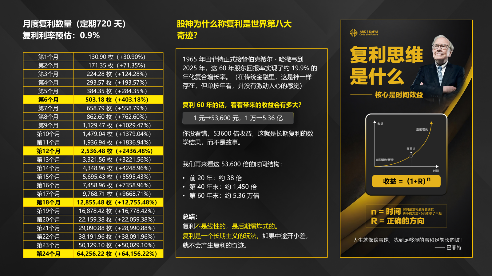

钱从哪来？
看完你应该能回答一个必被问到的问题——「钱从哪来？」
学习路径第四步。看完你应该能回答一个必被问到的问题——「钱从哪来？」
每一块最后都有一段可以直接念的话。
一、先看这张图：复利思维

官方资料：《复利思维是什么》
二、三种收益（先记住这个框架）
| 类型 | 你要做什么 | 钱从哪来 |
|---|---|---|
| 静态收益 | 什么都不做，质押就行 | 复利滚存，币量增长 |
| 动态收益 | 发展团队 | 邀请奖励 + 团队奖励 |
| 股东分红 | 成为永久股东 | 手续费、生态收入分红 |
「它赚钱分三种，我一个个讲。
第一种叫『静态』——你什么都不用干，把钱放进去就行。它每 12 小时自动结算一次，你的币数量自己会涨。相当于躺着也在长。
第二种叫『动态』——你发展团队，别人进来了，你也拿奖励。
第三种是股东分红——你成为永久股东，它赚的钱按比例分给你。」
「除了静态收益，还有动态收益，也就是邀请奖。在 ARK 的系统里面，静态奖励、邀请奖励，还有一个道奖励——道奖励除了上下级别之外……」——9/25 晨间
三、静态收益：复利怎么算
「静态收益的重点是复利——不是说利息高，是利息也会生利息。
我给你举个例子，同样是 100 个币：
质押 540 天，日收益大概 0.7%，半年能到 3.5 倍。
质押 720 天，日收益大概 0.75%，半年就到 3.6 倍。
看着差不多对吧？但时间一拉长，差距就大了——因为复利是在越来越大的基数上滚。
不过我要强调——这些是预估数字，不是固定的，市场有波动。」
「我们都以 100 枚代币来做计算，如果质押 540 天，日收益 0.7% 的情况下，半年 3.5 倍、一年 12 倍。但如果选择 720 天呢——差个 0.05%，半年就是 3.6 倍、一年 13 倍。」——9/22 晚间 AMA
⚠️ 讲师自己也强调：「这个收益是浮动的，并不是固定的。」
四、动态收益：为什么静态是底气
「很多人问我：那我要不要拉人？
我说——你先搞懂静态，再去搞动态。
因为静态是底气。你自己都赚到钱了，你讲话才有分量。
只有一个项目当静态能赚钱的时候，动态才能做得起来。」
「只有一个项目当静态能赚钱的时候，动态才能做得起来。」——9/26 晨间
五、股东分红：钱从哪来
「红利从哪来？我给你算三笔：
第一，交易手续费。每笔交易收 2.5%，其中一部分拿回去买币分红、一部分销毁。
第二，再质押挖矿的收益。来自燃烧释放的手续费。
第三，生态收入。阿奇 AI 卖服务赚的钱，也会回流一部分。
所以你看——项目方本来自己要赚的这几笔钱，他拿回来分给股东了。」
「第二个今天再质押挖矿的收益来自于我们的燃烧释放手续费。第三今天我们 ARKIE 也有卖出 2.5% 的手续费，1.5% 用来分给我们的永久股东，而 1% 用来减少市场流通量。」——9/22 晚间 AMA
六、股东分红的钱从哪来（AI 三层分配）
| 层级 | 谁 | 结果 |
|---|---|---|
| 第一层 算力层 | 英伟达、腾讯云、阿里云 | 吃最大一口 |
| 第二层 模型层 | 豆包、千问、元宝 | 吃第二口 |
| 第三层 用户层 | 普通用户（也是 ARK 参与者的起点） | 原本分不到 |
→ 但参与 ARK 后，有机会成为阿奇 AI 的股东，钱就会分到股东手里。
「价值从下往上流转，但真正的利润分配，从来没有从上往下回过。今天不是 AI 不能赚钱，而是我们根本不在赚钱的那一层。」——陈三老师，9/29 专场3
「参与 ARK，有机会成为阿奇 AI 的股东。」——9/26 晨间
八、为什么要看长期（两个真实案例）
| 案例 | 投入 | 结果 |
|---|---|---|
| 浙江大姐 | 5000 美金放进 OHM，然后忘了 | 4 年后 → 149 万美金（约 3 万变 1000 万） |
| 海南大哥 | 2022 年投 600 万在 OHM | 2024 年 8 月起用利息定投 BTC，最高持有 1100 个 BTC（约 8.8 亿美金），本金仍在产生利息 |
共同点：都不是"炒"出来的，是"等"出来的。
「这两个案例，我们是真实看到的：跟时间做朋友、做长期主义的人，就可以获得更大的收益。」
「如果你天天看盘、天天听盘、天天看着它涨跌心慌，你就拿不到。」
两个案例 —— 9/26 晨间（讲师亲述）
「做时间的朋友，而不是做行情的奴隶。」——9/26 晨间
十、提现怎么算（系数 + 涡轮 + 燃烧）
燃烧机制：提现时按解锁周期扣费（立即扣 20%，60 天 0%）。
涡轮机制：提现时系统用你的 USDT 在 PancakeSwap 买入等量 ARK，产生买盘。
系数：决定当天你能变现的比例，每天变化。
第一步：共同的计算步骤（以每天奖励 50 币、60 天释放为例）
| 项目 | 算法 | 结果 |
|---|---|---|
| 扣贡献值消耗 | 50 × 20%（买贡献值的币不参与涡轮） | 50 − 10 = 剩 40 币 |
| 涡轮手续费 | 40 × 2.5%（用 U 买 40 币→再卖出，收 2.5%） | 1 币 |
第二步：不同系数下，每天能变现多少
| 系数 | 可卖数量 | 涡轮手续费 | 最终卖出手续费 | 净变现 |
|---|---|---|---|---|
| 0.5 | 40×0.5 = 20 | 1 | 20×2.5% = 0.5 | 18.5 币 |
| 0.6 | 40×0.6 = 24 | 1 | 24×2.5% = 0.6 | 22.4 币 |
| 0.7 | 40×0.7 = 28 | 1 | 28×2.5% = 0.7 | 26.3 币 |
「系数每天会变化，有高也有低。看到某些天系数低，没有必要放大成长期结果。」
「如果当日系数低于 0.5，就可以理解成一种"不建议卖出变现"的信号，可以暂缓变现；对长期主义者来说，可适当延迟满足，选择高系数变现的时机。」
「要庆幸有系数机制 —— 如果没有，假设遇到假期市场疲软、币价大波动，又是什么景象呢？」
系数机制源自 第 11 号提案「延迟奖励模型」（S5 以上按业绩正负数延迟，系数 50/60/70/80，级别越高系数越高）——9/26 夜聊 讲师逐条讲提案
「这个涡轮系数，就像水库大坝的阀门 —— 水不足就关，水充足就开，通过系数来调整，稳定币价。」——9/27 晨间
「以前打造共识全靠喊口号，现在不需要了 —— 用机制来达成共识。」——9/27 晨间
十一、社区补贴（覆盖日常开销）
| 频率 | 补贴类型 | 参考额度 |
|---|---|---|
| 每天 | 餐补 + 新增业绩 3% 相关补贴 | 做 10 万/月 → 3000~9000U |
| 每周 | 沙龙会议补贴 | — |
| 每月 | 办公室补贴（工作室最高 10 万业绩封顶 2000U） | 2000U |
| 活动 | 招商会（业绩达标 6 万拿 2000 + 基础补贴 1000） | ~3000U |
| 活动 | 实战营（需筛选、交押金） | ~2300U |
讲师算账：工作室 2000 + 餐补 4000 + 招商会 2000 + 实战营 2000 = 月做 10 万业绩，保底补贴约 1 万 U。
「正常开展社区工作的伙伴，除了奖励，其实还有各种补贴。」
「只要是正常运作社区，这些补贴基本覆盖开销，甚至有盈余都是没有问题的。」
「如果你还没拿过啥补贴，也许不是你不努力，是你规则没有搞透 —— 建议抓紧把补贴规则吃透。」
社区补贴明细 —— 9/28 专场3（讲师逐项测算，含餐补考核规则）
「工作室每间都要是活跃工作室，用机制去调控；不符合资格的月底取消权益。」——9/28 专场3
以上补贴额度来自讲师课程中的测算口径，实际以官方当期政策为准。
讲解时建议表述为「按政策测算」，不要当作固定承诺。
十一、动态收益怎么算（完整公式）
前面讲的是静态收益提现（按天奖励 50 币举例）。
这一节是动态收益（推广奖励）的计算 —— 同样是扣 20% 贡献值 + 涡轮损耗 + 卖出手续费。
公式（记住这一个就够）
| 项目 | 公式 |
|---|---|
| 每天实际到手币数 | X ×（0.78 × Y − 0.02） |
| 其中 X | 当天动态奖励币数 |
| 其中 Y | 涡轮系数 |
| 实际到手比例 | 0.78 × Y − 0.02 |
| 可变现价值 | X ×（0.78Y − 0.02）× 币价 × U汇率 |
推导过程（四步）
| 步骤 | 计算 | 结果 |
|---|---|---|
| ① 扣 20% 贡献值 | X × (1 − 20%) | 0.8X |
| ② 涡轮损耗 | 0.8X × 2.5% | 0.02X |
| ③ 按系数算得 | 0.8X × Y | 0.8XY |
| ④ 卖出损耗 | 0.8XY × 2.5% | 0.02XY |
| 最终 = 0.8XY − 0.02X − 0.02XY = X × (0.78Y − 0.02) | ||
不同系数的到手比例
| 涡轮系数 Y | 实际到手比例 | 说明 |
|---|---|---|
| < 0.02564 | 负数 | ⚠️ 币不足以覆盖手续费 → 不要涡轮 |
| 0.4 | 29.2% | — |
| 0.5 | 37% | — |
| 0.6 | 44.8% | — |
| 0.7 | 52.6% | — |
⚠️ 重要提示：如果涡轮系数低于 0.02564，按公式算出来是负数 —— 说明拿到手的币不够覆盖手续费，这种情况不要做涡轮。
实测算例（每天 20 ARK，S3 水平）
| 系数 Y | 实际 ARK | 每日折合 | 每月约 |
|---|---|---|---|
| 0.4 | 5.84 个 | 254.33 元 | 约 7,630 元 |
| 0.5 | 7.4 个 | 322.27 元 | 约 9,668 元 |
| 0.6 | 8.96 个 | 390.21 元 | 约 11,706 元 |
| 0.7 | 10.52 个 | 458.15 元 | 约 13,745 元 |
以上为按当前币价和汇率的测算，不是承诺。实际收益随币价、系数、汇率变化。
公式本身是确定的（已验算），但结果会变。
动态收益计算公式 —— 用户提供的计算口径，经我方验算（分步推导与公式一致）
涡轮系数最低门槛（0.02564）—— 由公式推导：0.78Y − 0.02 = 0 → Y = 0.02564
九、一次完整的「钱从哪来」（1 分钟版）
「你肯定想问：这钱从哪来？
我分三层给你讲。
第一层，质押复利。你把币放进去，每 12 小时自动结算一次，币的数量自己涨。这个跟币价没直接关系。
第二层，生态收入。阿奇 AI 是真能干活的产品，有订阅、有企业付费，这些钱一部分拿回来回购销毁。
第三层，股东分红。你成为永久股东，手续费和生态收入按比例分给你。
所以它不是『拆东墙补西墙』，是真的有产品在赚钱。当然——收益都是预估的，不是固定的，这个我必须跟你说清楚。」
先讲三层结构（让他明白钱从哪来），最后主动说风险（建立信任）。
主动说风险这一句，反而是最能打动人的——因为别人都不敢说。